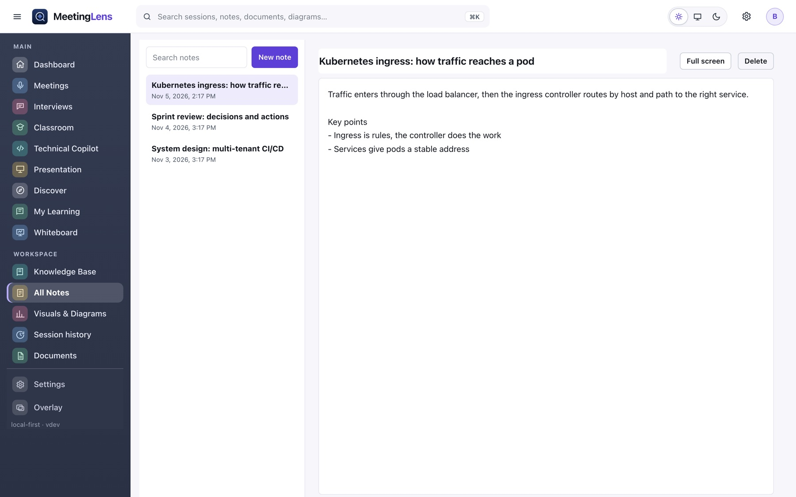
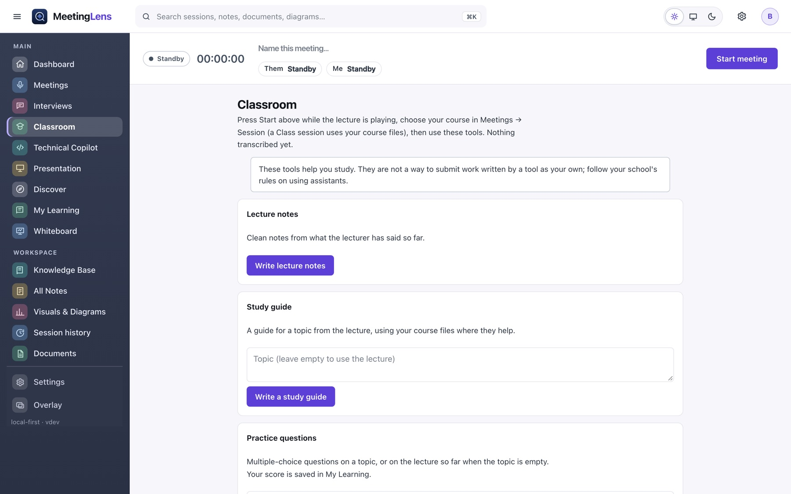
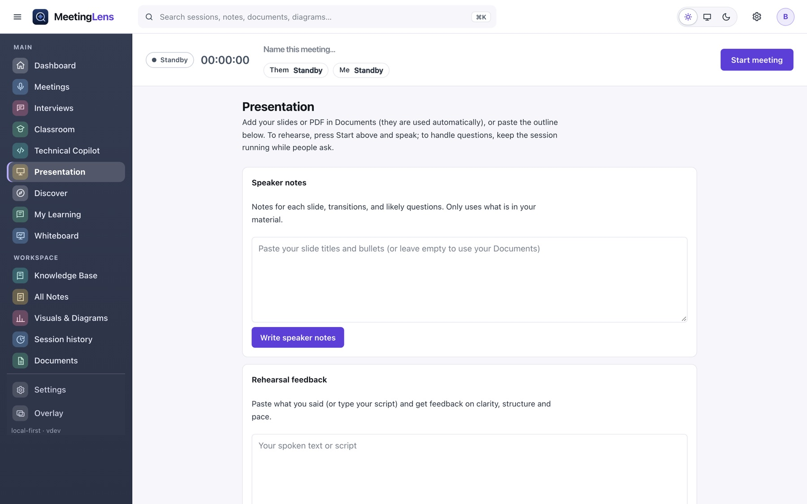
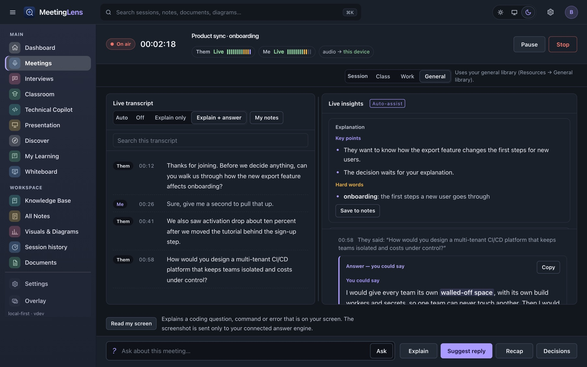

Live transcript
Two sources, Them and Me, written as people speak. Search the transcript and resize the panels.
Features
Nine areas, one workspace. Each feature says whether it is in the current installer or arrives in the next one.
The installer you can download today is 0.1.4. The new workspace on these pages (Dashboard, Technical Copilot, Whiteboard, Discover, My Learning and more) is built and in the source code, and arrives in the next installer, 0.1.5. Each feature below says which one it belongs to.
Understand every point while the call is still going.
Two sources, Them and Me, written as people speak. Search the transcript and resize the panels.
Each finished thought is explained in simple words with its hard words listed. Auto-assist works hands-free.
Ask about the meeting and the answer comes only from what was said. Answers show in the reading view, with key words highlighted.
Confirmed decisions with the quote that proves them, and action items with an owner or a deadline only when someone said it.
Stop transcribing for a moment without closing the capture.
When a session ends, download your notes as Word, Markdown or text in one click.
Practise and answer like an expert, without inventing a thing.
Press Start interview and each question is answered as it is asked: say it, understand it, trade-offs, hard words and a likely follow-up.
Simple, Professional, Technical or STAR. STAR uses only your own notes and never invents facts.
Get a question for your role, write your answer, then get feedback on correctness, missing points and clarity.
Paste a job description: skills they want, likely questions and what to prepare, compared with your own documents.
Ask, Explain, Suggest reply and Recap are also on the Interview screen.
Explain, troubleshoot, track and draw engineering discussions.
A term or the latest point, in simple words first and then more depth.
Causes are hypotheses. Commands are read-only and are copied, never run.
Symptoms, hypotheses, evidence, actions and decisions. A root cause needs supporting evidence.
Mermaid diagrams from the conversation with verified, mentioned and inferred labels.
Study help from the lecture and your course files.
Clean notes with definitions, examples and review questions.
Key concepts and self-check questions. A reminder says it is study help, not finished coursework.
Multiple choice questions with explanations. Your score is saved in My Learning.
Choose a course and a week, and answers cite your files by name and page.
Prepare, rehearse and handle questions.
Notes for every slide, transitions and likely questions, only from your own material.
Paste what you said and get feedback on clarity, structure and pace.
Suggested answers grounded in your slides, with a flag when your material does not cover it.
Draw, edit and chart what matters.
Draw freely, or generate a diagram from a session, a note or a saved architecture.
Describe a change, see it in plain words, then apply it. Only the targeted objects change.
Versions are saved before every automatic change. Export PNG, SVG, an editable file or Mermaid.
Bar, line and pie charts built only from numbers in your material, each marked as sourced or entered by you.
Find anything you kept.
Autosaved notes. Save any answer, plan or decision to notes in one click.
One search over sessions, transcripts, notes, documents, diagrams, boards and learning items.
Add PDF, Word, text or Markdown files. Answers cite the file and page, checked by the app.
Learn the skills you choose.
Articles with pictures and projects from official sources, ranked for the skills you follow.
Add any skill or topic. It matches articles and searches GitHub for it.
Goals, steps and progress from what you actually mark done, plus knowledge gaps from your quiz results.
Make it look and work the way you like.
One-click switch in the top bar.
Collapse the menu (Cmd/Ctrl+B) and take the whiteboard or notes full screen.
A see-through window beside your call. Turn it fully clear and only the words show.
Explains a coding problem, command or error on your screen with one shortcut (Mac).
Small, normal or large text, and an easy-to-read font.
Gallery
Screenshots use sample data.




Download MeetingLens for Mac or Windows. No account, no subscription.
Download MeetingLens